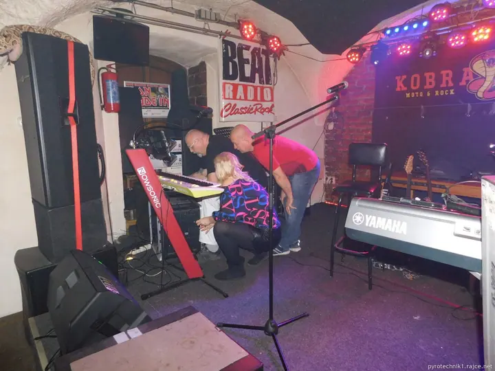

01 / 03
Koncerty a kulturní akce
Kultura je to, co fotím nejčastěji. Chodím do klubů, kde hrají kapely, a fotím pódium, muzikanty i lidi kolem baru.
Zeptat se na termín→




Fotím tam, kde hraje kapela
Zeptat se na termín →(01) Ahoj
Jmenuji se Josef Karásek a jsem fotograf z Prahy, z Černého Mostu. Nejčastěji mě potkáte v klubu u pódia , mezi lidmi u baru nebo u stolu na oslavě . K fotkám natáčím i videa, která najdete na mém YouTube kanálu.
(02) Co dělám
01 / 03
Kultura je to, co fotím nejčastěji. Chodím do klubů, kde hrají kapely, a fotím pódium, muzikanty i lidi kolem baru.
Zeptat se na termín→02 / 03
Fotím oslavy a společenské večery. Na fotkách jsou lidé u stolu, přípitky a večer tak, jak opravdu proběhl.
Zeptat se na termín→Dále nabízím
Kromě fotek natáčím i videa. Ukázky najdete na mém YouTube kanálu.
↗(04) Postup
Od první zprávy po hotovou galerii.
Krok 1 z 4
Pošlete mi e-mail s termínem, místem a krátkým popisem akce.
Krok 2 z 4
Probereme, co chcete mít na fotkách, jestli jde o koncert, oslavu nebo jinou událost, a zda chcete i video.
Krok 3 z 4
Přijdu na akci a fotím pódium, hosty i atmosféru večera tak, aby z fotek bylo poznat, jak to tam vypadalo.
Krok 4 z 4
Fotky vyberu, upravím a pošlu vám je. Domluvíme se, jestli je chcete i v online albu.
Pódium, bar a lidé, kteří dělají večer
(05) Za objektivem
Jsem fotograf z Prahy, z Černého Mostu. Nejvíc mě baví kultura a zábava: koncerty v malých klubech, večery, kdy se hraje naživo, a oslavy, kde se lidé sejdou u jednoho stolu.
Na Rajčeti mám přes 280 alb. Najdete tam fotky z kulturních akcí, z cest, z oslav i z různých událostí. Nefotím jen pódium, zajímají mě i lidé kolem, jejich výrazy a nálada celého večera.
Kromě fotek natáčím i videa a dávám je na svůj YouTube kanál. Pokud chystáte koncert, klubový večer nebo oslavu, napište mi na e-mail a domluvíme se.
Josef
Josef Karásek · Fotograf koncertů, akcí a oslav
Jsem z Prahy, z Černého Mostu, takže nejčastěji fotím v Praze. O akci jinde se můžeme domluvit.
Hlavně koncerty a kulturní akce v klubech, dále oslavy, večírky a různé společenské události.
Ano, natáčím i videa. Ukázky najdete na mém YouTube kanálu a podrobnosti můžeme probrat e-mailem.
Cena závisí na délce a rozsahu akce. Napište mi, co plánujete, a já vám pošlu nabídku.
(07) Kontakt
Napište pár vět o tom, co si představujete, a termín, který se vám hodí.
karasekj@email.cz